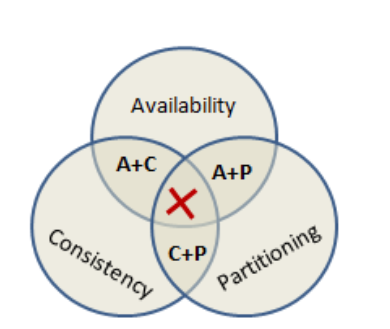
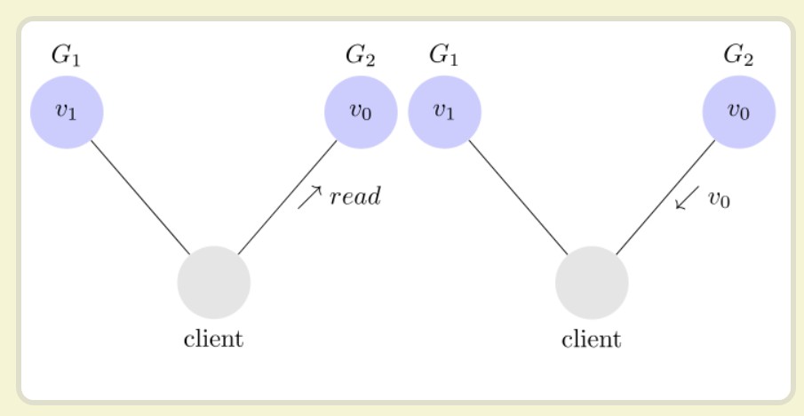

CAP理论在1998年首次被提出，1999年被发表为文章，2000年Brewer在PODC大会演说时将CAP作为假设，2002年才被证明为定理。CAP定理属于理论计算机科学中的内容。
分布式理论的三个指标

- consistency
- availability
- partition tolerance
Eric Brewer 说，这三个指标不可能同时做到。这个结论就叫做 CAP 定理。
partition tolerance 分区容错
大多数分布式系统都分布在多个子网络，每个子网络就叫做一个区，分区容错的意思就是，区间通信可能失败。一般来说，分区容错无法避免，因为可以认为CAP中的P一定存在。CAP定律，剩下的C和A无法同时做到。
Consistency 一致性
写操作之后的读操作，必须返回该值。举例来说，某条记录是 v0，用户向 G1 发起一个写操作，将其改为 v1。
接下来，用户的读操作就会得到 v1。这就叫一致性。
但问题是，用户可能向G2发起读操作，但G2还未更新成V1,这样就不满足一致性了。
为了让 G2 也能变为 v1，就要在 G1 写操作的时候，让 G1 向 G2 发送一条消息，要求 G2 也改成 v1。

Availability 可用性
只要收到用户的请求，服务器就必须给出回应。
用户可以选择向 G1 或 G2 发起读操作。不管是哪台服务器，只要收到请求，就必须告诉用户，到底是 v0 还是 v1，否则就不满足可用性。
Consistency 和 Availability 的矛盾
一致性和可用性，为什么不可能同时成立？答案很简单，因为可能通信失败（即出现分区容错）。
如果保证 G2 的一致性，那么 G1 必须在写操作时，锁定 G2 的读操作和写操作。只有数据同步后，才能重新开放读写。锁定期间，G2 不能读写，没有可用性。
如果保证 G2 的可用性，那么势必不能锁定 G2，所以一致性不成立。